QQ 机器人建设教程¶
想必大家或多或少都见过某些群聊中的 QQ 机器人（Bot），它可以实现一些自动化的功能。这篇文章会带新手入门，自己建设一个 QQ 机器人。
下面的文章没有理解上的难度，都是按照教程操作，严禁跳步！
需要准备的东西¶
-
一台长期不断电的电脑
- QQ 机器人需要像你一样在一台电脑上面登录自己的 QQ 账号，所以要想机器人持续不断地提供服务，它就需要运行在一台长期不断电的电脑上
- 大多数同学可能没有条件购置一台这样的服务器设备，但是我校有 Vlab 虚拟机系统，非常方便，大家可以在这个系统上申请一台自己的虚拟机，然后运行下面的过程
- 一个不用的 QQ 账号
- 自建的 QQ 机器人是不被腾讯许可的，所以请务必使用小号进行操作，以防被风控（即被腾讯暂时管控，不允许发送消息）
- 如果是新建的 QQ 账号，建议等几天再用作 Bot 账号，以防被封
创建新的虚拟机¶
Step 1: 登录我校 Vlab 网站，点击虚拟机管理
Step 2: 选择创建一个新的虚拟机，镜像选择默认即可（下面用于演示的系统版本是 Ubuntu 22.04 LTS）
Step 3: 等待几分钟，让虚拟机完成初始化，你可以刷新页面，直到出现一排蓝色的按钮，点开机
Step 4: 开机之后，点击网页连接，即可连接到虚拟机桌面
安装必要的软件包¶
我们使用命令行工具来安装软件包。如果同学没接触过也不要害怕，照着文章说的做就可以了。
-
在桌面上空白处右键，选择在终端中打开
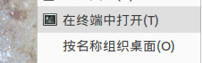
- 输入
sudo apt update命令，更新软件源
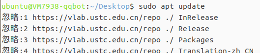
- 输入
sudo apt upgrade命令，更新软件包
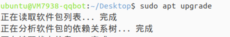
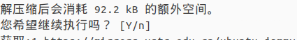
- 输入
sudo apt install python3-pip命令，安装 pip
- 输入
python3 -m pip install --user pipx命令，安装 pipx - 输入
python3 -m pipx ensurepath命令，配置环境
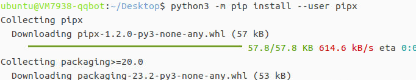
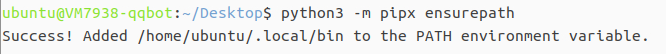
- 输入
pip install nb-cli命令安装 Bot 脚手架
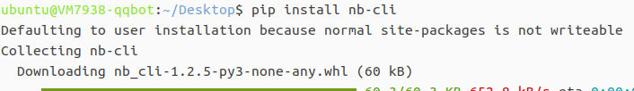
- 输入
sudo apt install git安装 git
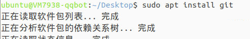
- 输入
git clone https://github.com/nonebot/nonebot2.git克隆 Bot 软件包到本地，执行完成后，桌面上应该会多出一个名为nonebot2的文件夹
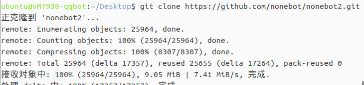
- 输入
cd nonebot2命令，跳转到文件夹内 - 输入
pip install .命令，安装 Bot 软件包
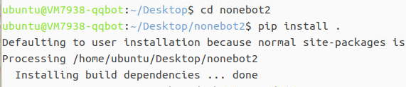
- 关闭当前终端，在桌面空白处重新启动终端
创建 Bot 项目¶
- 在重新启动的终端中，输入
nb命令
- 出现如下界面，确保箭头指向创建一个 NoneBot 项目，按回车确认
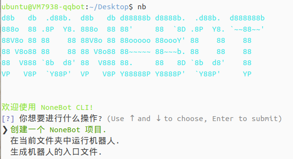
- 选择模板：
bootstrap
- 项目名称：自己制指定，我填了 new_qq_bot，注意这里不要使用空格和中文，简单的英文字符就可以了
- 选择驱动器：使用鼠标上下键移动，按空格选择，按回车确认，确保状态和下方截图一样
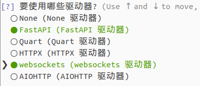
- 选择适配器：仅选择 OneBot V11 这个适配器
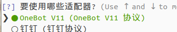
- 之后一直回车，直到询问使用什么插件，选择 echo 这个插件，回车确认，之后就会提示完成创建
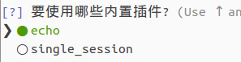
- 打开桌面上的 new_qq_bot 文件夹，里面的内容如图（如果有的看不到，请在文件夹工具栏视图(V)中选择显示隐藏文件）
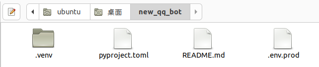
- 回到刚刚的终端，输入
cd new_qq_bot命令，进入 Bot 项目 - 输入
nb run --reload命令，开启 Bot，出现下面的状态就是以上步骤都 OK 了
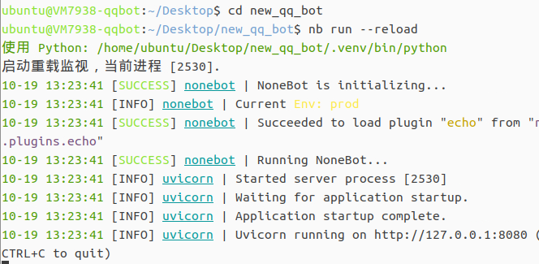
- 关闭终端
安装 go-cqhttp¶
就好像你在电脑上要安装 QQ 这个软件才能登陆 QQ 一样，Bot 也需要。不过 Bot 不需要那么多花里胡哨的功能，你可以把 go-cqhttp 看作是一个更小的 QQ 客户端。
- 从左上角应用程序-互联网打开 FireFox 浏览器，在地址栏输入
https://github.com/Mrs4s/go-cqhttp/releases（注意：虚拟机和你的电脑是两台机器，你在自己电脑上复制的网址无法粘贴到虚拟机内，请手动输入）
- 向下滑动，找到 Assets，点击
go-cqhttp_x.x.x_linux_amd64.deb下载（请注意是 amd64 不是 arm64）
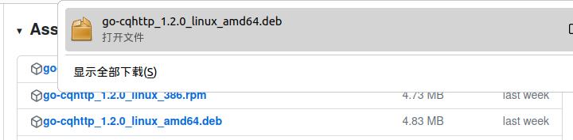
- 点击浏览器右侧的文件按钮，来到文件下载的位置 Downloads 文件夹，在这个文件夹空白处右键打开终端
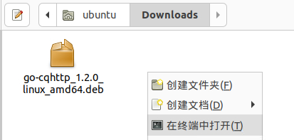
- 输入
sudo dpkg -i go-cqhttp_x.x.x_linux_amd64.deb命令，安装软件包（小技巧，输入-i之后，输入一个g再按一下 tab 键，就会自动匹配完整的文件名）
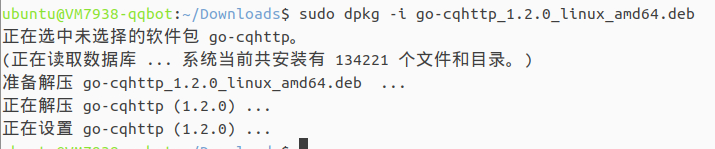
- 关闭终端，在桌面重新启动终端，输入
go-cqhttp命令，输入 3，然后回车。此时发现桌面上多了一个名为config.yml的文件
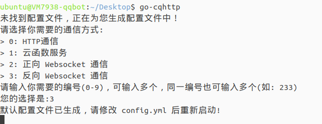
- 在桌面上找到这个文件，右键选择使用 Pluma 打开（如果没有，就点击使用其他程序打开，然后找到 Pluma）
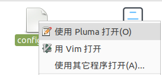
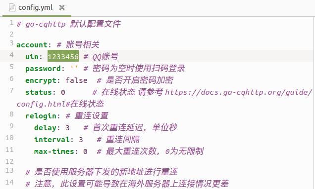
- 需要修改的地方：
- 把 uin 改成用于 Bot 的 QQ 账号，在下方 password 字段的引号中输入你的密码
- 往下滑，找到 sign-servers，将 url 改成
'https://qsign.loli.vet'（这是某人搭建的签名服务器，不一定总是可用，如果不可用请报告此问题） - 再往下滑，找到 ws-reverse 下的 universal，改成
ws://127.0.0.1:8080/onebot/v11/ws
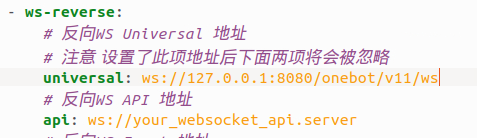
- 保存并关闭
config.yml，在桌面重新启动终端，输入go-cqhttp命令
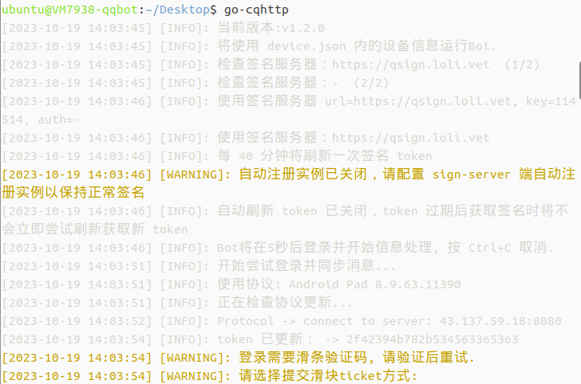
- 等待一段时间后，会出现如上内容，需要你填滑条验证码，这里我们选择 1，自动提交（输入 1 并回车），然后就会给我们一个链接，按住键盘上的 ctrl，点一下这个链接做一下验证码
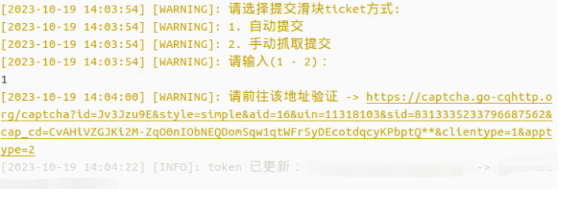
- 在浏览器做完验证码后，回到终端，稍等几秒，如果出现
token 已更新……信息就是验证成功了 - 我这边接着还出现了一个设备锁验证，我们选择发送短信验证码验证即可
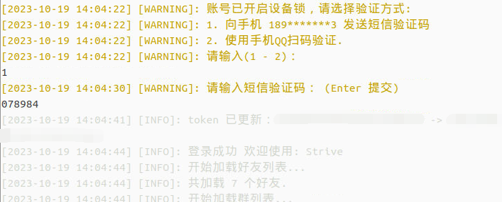
- 短信验证码输入完毕后，如果出现上图所示的
登录成功，并且开始一直弹下面这两行报警，就说明登录成功了！现在可以关闭终端。
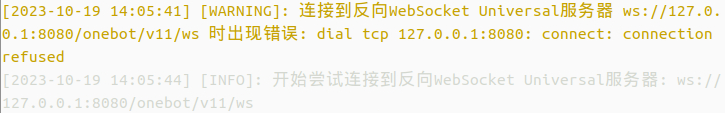
开启服务¶
现在有了之前安装的 nonebot 框架和 go-cqhttp 框架，我们就可以开启机器人的服务了。为此，我们需要打开两个终端，你可以按照下面的步骤走：
- 在桌面空白处右键打开终端，输入
go-cqhttp命令；正常运行的标志是一直弹出上文所示的两行报警
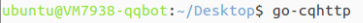
- 在桌面的机器人项目文件夹（这里是 new_qq_bot）中空白处右键打开终端，输入
nb run --reload命令；正常运行的标志是出现connection open，并且之前那个终端不再一直弹报警，而是开始输出收到的 QQ 消息
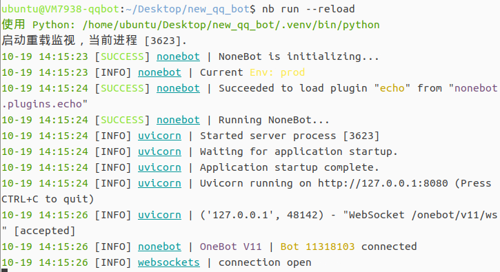
- 用你的 QQ 大号给 Bot 账号发个消息
/echo 1测试，如果接到回复就是成功了！
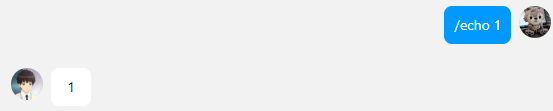
现在你肯定还有疑问，那么多自动化功能是怎么实现的呢？我们现在安装的 Bot 只具备最简单的 echo 回响功能，如果要给机器人增加功能，需要我们自己编写插件（或者在商店中下载自己喜欢的插件）。
因为我们的功能比较专，所以都是以自己编写插件为主。自己编写插件需要一定的 Python 编程基础，我接下来也会给一些示例，如果没有 Python 编程基础又想要实现类似的功能，就直接复制粘贴修改里面的具体信息就行。
（撰写：黄瑞轩）